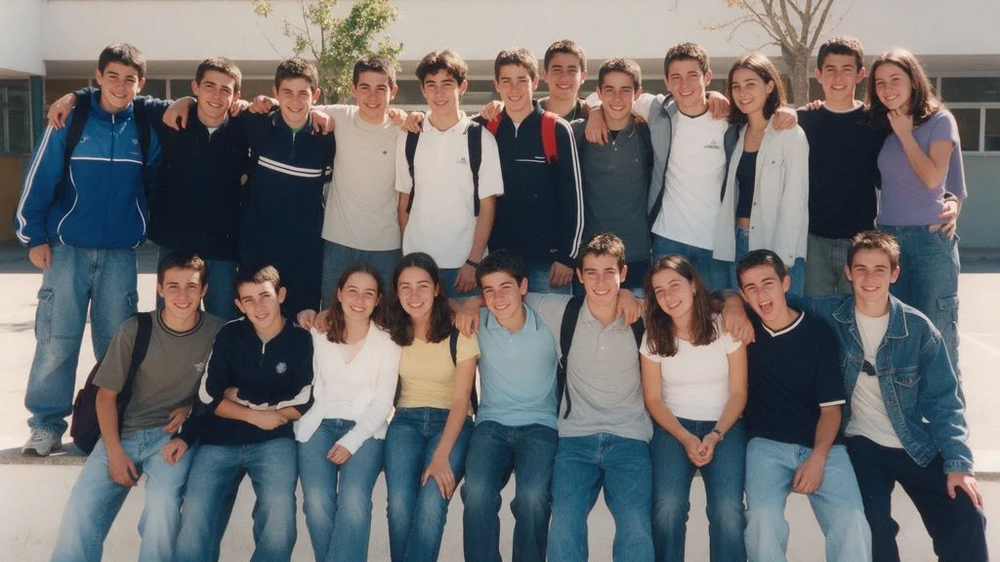

Quem se sentava ao teu lado em 1999?
Diz em que escola estiveste e em que anos. O Estivemus mostra-te quem também lá esteve: da creche à universidade.
Ver como funciona
Ficha de turma
- Escola
- a tua escola
- Anos
- 1996 – 1999
- Turma
- 12.º B
Como funciona
1Escreve onde estiveste.
Creche, escola ou universidade: a instituição, os anos e, se te lembrares, a turma. Se a tua escola ainda não está na lista, acrescentas tu.
2Vê quem esteve lá contigo.
Só aparecem pessoas que estiveram no mesmo sítio nos mesmos anos. Também podes procurar por nome, ano ou turma.
3Carrega em “Estive lá”.
Quando te lembras de alguém, dizes. Se essa pessoa também se lembrar de ti, ficam ligados e o contacto aparece aos dois.
4Mostra a foto de turma.
Publica a foto antiga e assinala quem reconheces. Cada pessoa aprova se quer ser marcada, ou responde “Era eu!”.
Aquela foto da gaveta pode ajudar alguém.
Ninguém se lembra de todos os nomes, mas quase toda a gente reconhece uma cara. Por isso as fotos de turma ficam à vista de quem esteve lá nesse ano, e só dessas pessoas.
Regras da casa
- Só maiores de 18 anos, e só quem tem conta vê os perfis.
- Por defeito, os outros veem o teu primeiro nome e a inicial do apelido.
- O contacto só aparece quando os dois se reconhecem.
- As fotos só são mostradas a quem esteve na mesma instituição nesse ano.
- Sem reconhecimento facial. Quem aparece numa foto é assinalado por pessoas, nunca por um programa.
- Podes esconder o perfil, bloquear alguém, descarregar os teus dados ou apagar a conta quando quiseres. Política de privacidade.
Perguntas
- Quanto custa?
- Nada. Criar conta e usar o Estivemus é grátis.
- Tenho de pôr uma foto minha?
- Não. A foto de perfil é opcional. Só precisamos do teu nome e de onde estiveste e quando.
- Posso instalar no telemóvel?
- Sim. No iPhone, abre no Safari, carrega em Partilhar e escolhe “Adicionar ao ecrã principal”. No Android, no Chrome, abre o menu e escolhe “Instalar app”.
- Apareço na foto de alguém e não quero estar lá.
- Nenhuma marcação fica visível sem a tua aprovação. Se a foto em si te incomoda, denuncia-a na app ou escreve-nos e removemos. Mais detalhes.
- Serve para localizar quem não quer ser encontrado?
- Não. Só vês pessoas que escolheram ter perfil, nunca pedimos moradas e o contacto só é partilhado quando as duas pessoas se reconhecem.
Entrada livre
A tua turma pode estar à tua espera.
Quanto mais gente entrar, mais fácil é reencontrarem-se. Cria a conta e passa a palavra aos teus antigos colegas.
Criar conta Já tenho conta